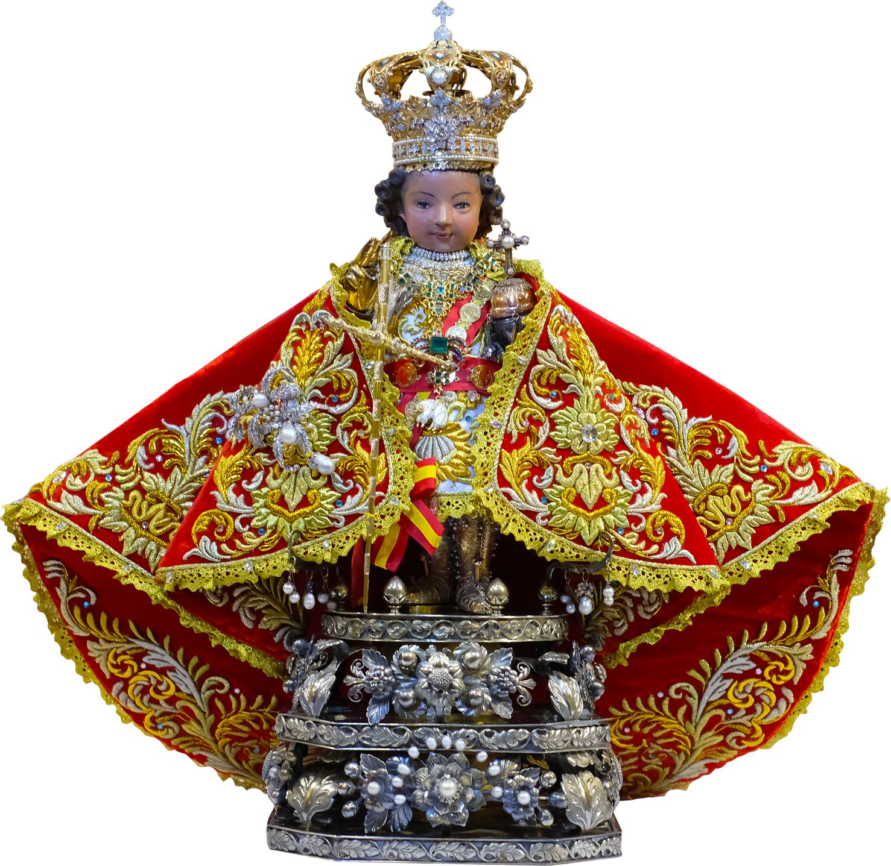

WELCOME TO THE CHAPEL
Señor Santo Niño
of Cebu
Enter a quiet space of prayer before Jesus Christ, the Holy Child. Bring your gratitude, your burdens, and your hopes.
“Let the little children come to me.” — Matthew 19:14 (excerpt)
NINE DAYS OF PRAYER
Novena & Prayers
An original, Scripture-inspired nine-day prayer journey to Jesus, the Holy Child. It is not presented as the official Basilica novena text.
January 7–15, 2027 · Each day opens at midnight in Cebu.
2027 Novena Schedule
0 of 9 completedDay 1 opens January 7, 2027.
Reflection
Jesus calls us to receive the Kingdom with a childlike heart. Humility makes room for grace; trust turns us toward our heavenly Father.
Prayer
Lord Jesus, Holy Child, teach me to trust you with an open heart. Help me release pride and fear, and follow you in humility. May I become attentive to your will today. Amen.
A CANDLE FOR YOUR NOVENA
Offer a Novena Candle
Offer a symbolic candle while praying the novena. These candles are separate from the offerings on the Light a Candle page. Each burns for 24 hours, with realistic flickering and timestamp-synchronized melting.
This candle is offered for your currently selected novena day. Guest offerings are saved in this browser.
My Novena Candles
No novena candles yet. You may offer one as you pray.
A FLORAL OFFERING OF DEVOTION
Offer Flowers v2.6
Offer a symbolic bouquet of red roses to Señor Santo Niño as a gesture of love, gratitude, and prayer. Each offering is associated with your selected novena day and saved separately from candles.
Each virtual bouquet costs ₱5. Prayer and novena readings are free.
My Offered Flowers
No bouquets offered yet. You may offer roses while praying the novena.
Additional original prayers
For the traditional Cebu novena and Friday devotion, consult the Basilica's approved prayer resources.
A SYMBOL OF PRAYER
Light a Candle
Each virtual candle costs ₱5 and stays visible for 24 hours. Prayer is free.
In guest mode, candles are stored only in this browser. Account synchronization becomes available after Supabase configuration.
My offered candles
No candles yet. Light one as you offer a prayer.
PRIVATE PRAYER JOURNAL
My Intentions
Write intentions and reflections privately. Public sharing is not part of this first release.
Saved intentions
You have not saved any intentions.
READ • REFLECT • PRAY
Scripture & Meditation
Biblical references and original meditations selected around the humility, mercy, and love of Christ.
Select the Scripture reference above to read the complete passage here in the King James Version (KJV). You may also consult your preferred Catholic Bible translation.
A deeper study
You may continue your study with the CrownMind Bible Library or your preferred Catholic Bible.
Visit CrownMind Institute ↗YOUR CHAPEL
Settings & Privacy
Reading preferences
Your choice is remembered on this device and applies to every devotional page.
The nine-day prayer texts and meditations are available in English in this initial draft; verified devotional translations are planned before public release.
Privacy and personal data
Guests can use the chapel without registration. Guest prayers and intentions stay in this browser. Checkout sends the offering type and an order identifier to the payment server.
Deletion cannot be undone. For cloud accounts, use My Account → Delete Sto. Niño data after Supabase is configured.
About this devotional app
Independently created by CrownMind Institute for personal devotional use. Not officially sponsored, affiliated, or endorsed by the Basilica Minore del Santo Niño or the Archdiocese of Cebu.